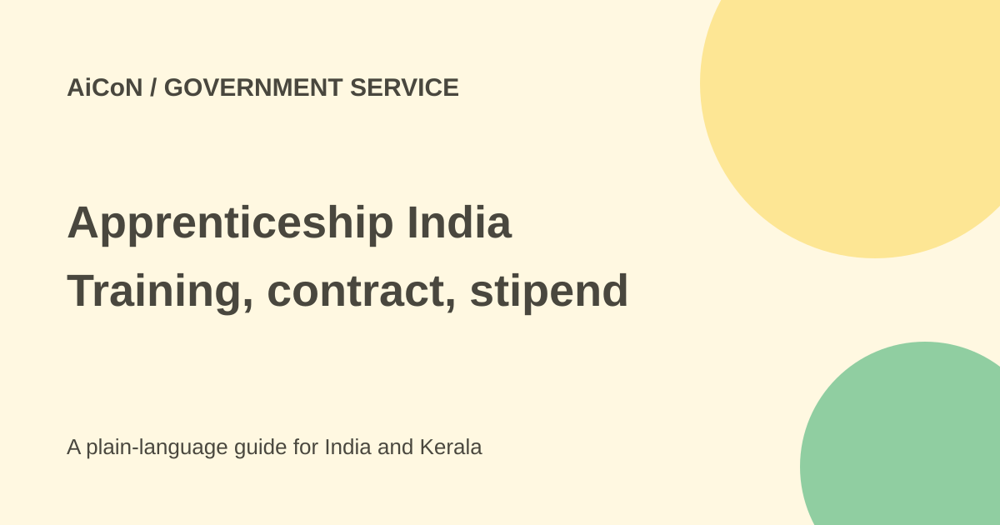

Apprenticeship India: apply for training, check stipend terms
Apprenticeship India helps candidates find employer-based training and manage apprenticeship contracts. A stipend comes under the contract. The older NAPS-2 subsidy rules are not enough to guarantee a fresh government payment in October 2026.

What is an apprenticeship?
An apprenticeship combines training in a workplace with the requirements of a recognised trade or course. It is not simply a cash scheme. You apply to an employer, go through selection, accept the offer and complete a training contract before work starts.
The portal supports registration, applications, contracts and payment-related records. Registering does not guarantee a seat, a particular stipend or a permanent job after training.
Who can apply?
Official guidance lists a general minimum age of 14, with 18 for designated trades related to hazardous industries. Education, technical skills, physical requirements and any employer age conditions still apply. A trade can need an ITI qualification, a skill-course background or a particular level of schooling.
The NAPS-2 guideline uses 35 as the upper age at registration for government partial-stipend support. That is a subsidy condition, not a universal maximum for every apprenticeship allowed by law. Read the exact opportunity rather than applying one age rule to all seats.
Employer stipend versus government support
The training contract should state the stipend and payment arrangements. Under the published NAPS-2 rules, government support was limited to 25% of stipend paid, capped at ₹1,500 monthly, through DBT. The employer pays its share. ₹1,500 is not the entire apprentice stipend and not an automatic extra for everyone.
The guideline excludes government departments and public-sector undertakings from this government support and sets other course and participation conditions. Employer apprenticeship opportunities can exist without a NAPS-funded contract.
Current subsidy status needs confirmation
The 2023 guideline gives a March 31, 2026 sunset. A July 2026 parliamentary answer confirms that NAPS-2 was continuing and reports engagements into the new financial year. That establishes later activity, but not the exact fresh-contract subsidy entitlement on October 7.
This check did not establish an official extension covering new enrolments after September 2026. Do not budget on the subsidy just from an old leaflet. Ask the employer and official portal support whether the specific contract is currently subsidy-eligible and how the full stipend is paid.
How to apply safely
- Open the official portal and choose the candidate route.
- Use your own contact details and complete the current identity checks through the portal only.
- Read opportunities by trade, location, qualifications and employer.
- For Kerala, check the actual work location, travel cost, hours and safety conditions, not merely the employer's head-office address.
- Apply to a suitable seat and keep its reference number and employer contact.
- Before accepting, read the training duration, stipend, attendance rules and any deductions in the contract.
- Verify whether it is a DBT/subsidy contract or paid fully by the employer. Keep the accepted contract and bank-payment records.
- Use the official grievance route for delayed payment or a disputed record.
Costs and scam warnings
The original post described free portal registration. This review did not submit a form or verify a live fee screen. Do not pay an unknown agent for a guaranteed seat, contract approval or stipend release.
Transport, accommodation and equipment can still affect your budget. Ask the employer which costs it covers. Bank and identity details may be needed in the official process; do not send a PIN or OTP to an intermediary claiming to complete it for you.
What changed since the original post?
We added the hazardous-trade age distinction, the 35-year subsidy condition and the published sunset-date gap. We separate the employer's contract stipend from government support. No seat was applied for and no current Kerala vacancy was confirmed.
Frequently asked questions
Does registration guarantee a job?
No. Employer selection and the training contract still matter.
Is ₹1,500 the whole stipend?
No. It is the published cap on the government's partial share.
Is fresh October subsidy access verified?
Not from the sources checked. Confirm the actual contract with official support.
Sources: Official apprenticeship portal · NAPS-2 guideline and sunset date · July 2026 parliamentary status · Official application explanation. Checked 7 October 2026.